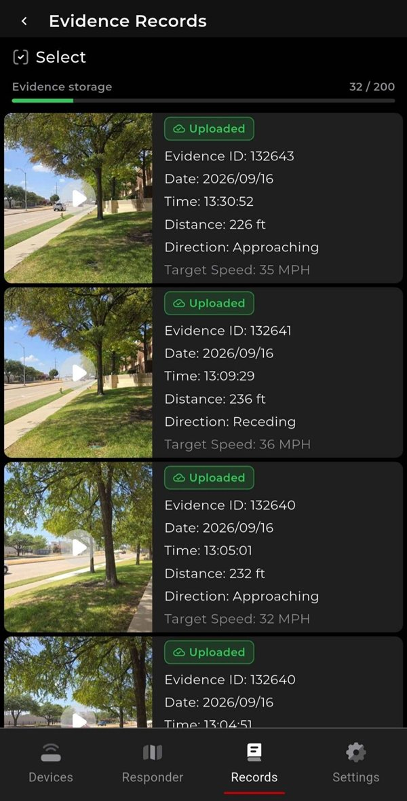
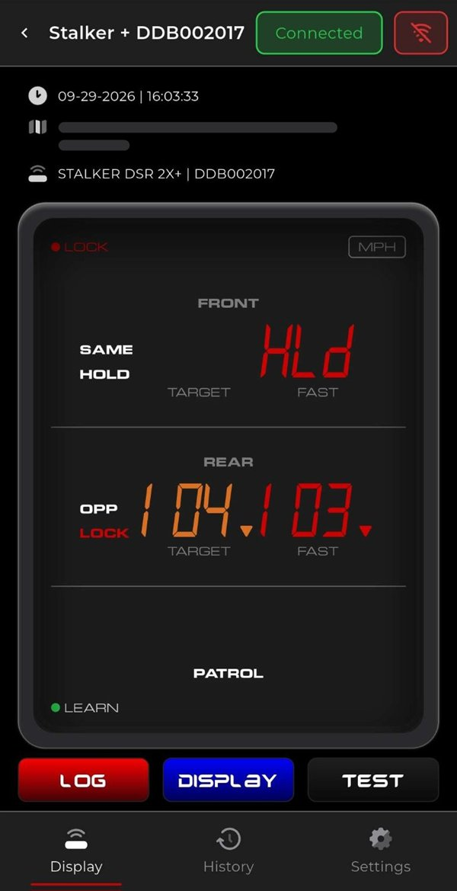
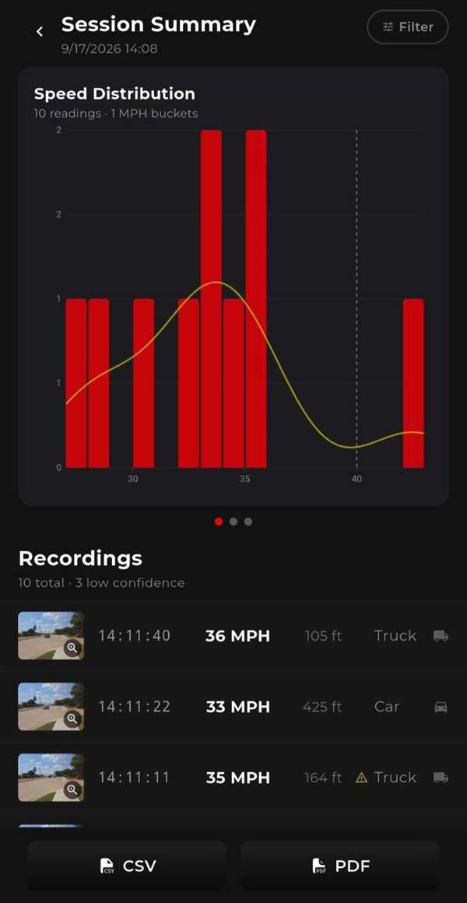

Police LIDAR & in-car radar
Stalker Task Force
Officers use the app to set up their radar, mirror its display on the phone, record evidence, and share enforcement events with nearby units. I was the sole Android developer for 18 months, shipping 25 releases, and I now co-lead the cross-platform rewrite in Flutter.
- Devices
- Stalker LIDAR guns and in-car radars
- Link
- Bluetooth LE and Bluetooth Classic
- Platforms
- Android (Java), moving to Flutter for Android and iOS
- Role
- Sole Android developer; co-lead of the Flutter rewrite
- In use
- Police agencies in states including Ohio and Alaska
What I built
- Bluetooth control of in-car radars: live screen mirroring, settings sync, and encrypted commands
- LIDAR-triggered evidence video with speed and distance burned into each frame, rebuilt in Flutter
- An offline upload queue for evidence and a live event map that officers can join
- On-device YOLOv8n vehicle detection for fixed-mount traffic surveys
- Reproduced a radar firmware deadlock by compiling the firmware’s C code to WebAssembly
- 877 automated tests written for the Flutter rewrite